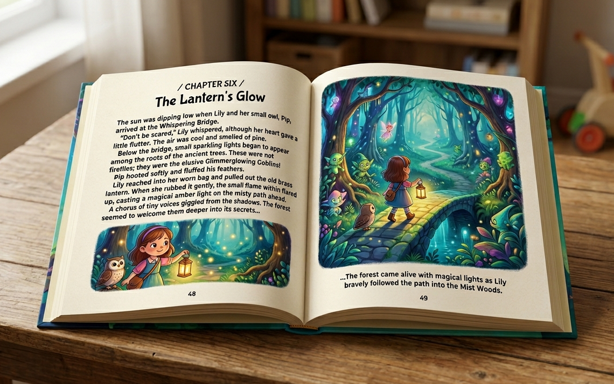

Novel Reading
사진올리기
My Books
My Words
👤
로그아웃
책 페이지 사진을 올려보세요. 그냥 지나치던 단어와 표현까지 놓치지 않게, 내 레벨에 맞춰 정리해드립니다.

한 페이지씩 찍어주세요
⚙️
📂 책 사진 올리기
앞페이지부터 차례로 찍은 사진을 올리세요. 선택한 순서대로 페이지가 됩니다.
텍스트 추출 중...
저장된 책
📚 책으로 저장
🔀 순서 편집
◀
▶
추출 실패
재시도
책 제목 붙이기
이 책의 제목을 입력하세요
폴더
폴더 없음
+ 새 폴더 만들기
취소
저장
폴더로 이동
폴더
폴더 없음
+ 새 폴더 만들기
취소
이동
페이지 순서 편집
↑↓ 버튼으로 페이지 순서를 바꿀 수 있어요
취소
저장
My Books에 자동저장되었어요.
단어 레벨 설정
* Renaissance STAR Reading 의 GE 점수를 설정하면 사진 검색 AI 자동 추천이 활성화됩니다.
단어 설명 언어
모국어
영어
단어장 설정
검색 시 단어장에 바로 추가
취소
저장